14 Final project
Consolidate the module on a real parallel program
The final project counts for 30% of the grade, with the same rubric for both tracks. It assesses the technical mastery of the module’s skills on a concrete problem, mixing several techniques seen in class (asyncio, multiprocessing, Dask, GPU depending on the topic).
14.1 Framework
- Alone or in a pair (communication arrangements chosen by the pair).
- Duration: from the launch (end of October) to the defense on 19/11; the report is handed in before the defense.
- Common constraints: the project must actually use parallelism (not disguised sequential code), the gains must be measured and justified, and the code must be reproducible (readable README, demonstration script).
14.2 Proposed topics
Work in progress — the list of projects is not finalized. The sixteen topics below are candidates: the first seven were not run last year, and the nine new ones are either new directions or higher-expectation extensions of topics already done last year. Taking any one means being the first team on it. More topics may be added before the launch. The framework, deadlines, defense and grading rubric above already hold, and you can still propose your own topic as long as it uses the module’s techniques.
14.2.1 Code assistants
Deep research assistant for creating a README for a codebase (agentic/MCP version)
Build an agentic assistant (tools + retrieval, not a fixed pipeline) that analyzes a codebase, infers the project structure, and generates a high-quality README with a summary, usage and architecture details. Unlike the classic pipeline version (done last year), the challenge here is the agent loop: which tools the assistant calls, in which order, and how it validates its own output.
Deliverables: a set of LLM configurations with MCP servers and prompts (Zed, Continue, or any harness you prefer) that generate a README.md for a given codebase, plus a short comparison with the non-agentic pipeline approach.
Background: Open Deep Research (“deep research” = an LLM driven by an agentic framework that organizes its actions in steps; here the “search” is codebase extraction instead of web search) and Building Deep Research from scratch.
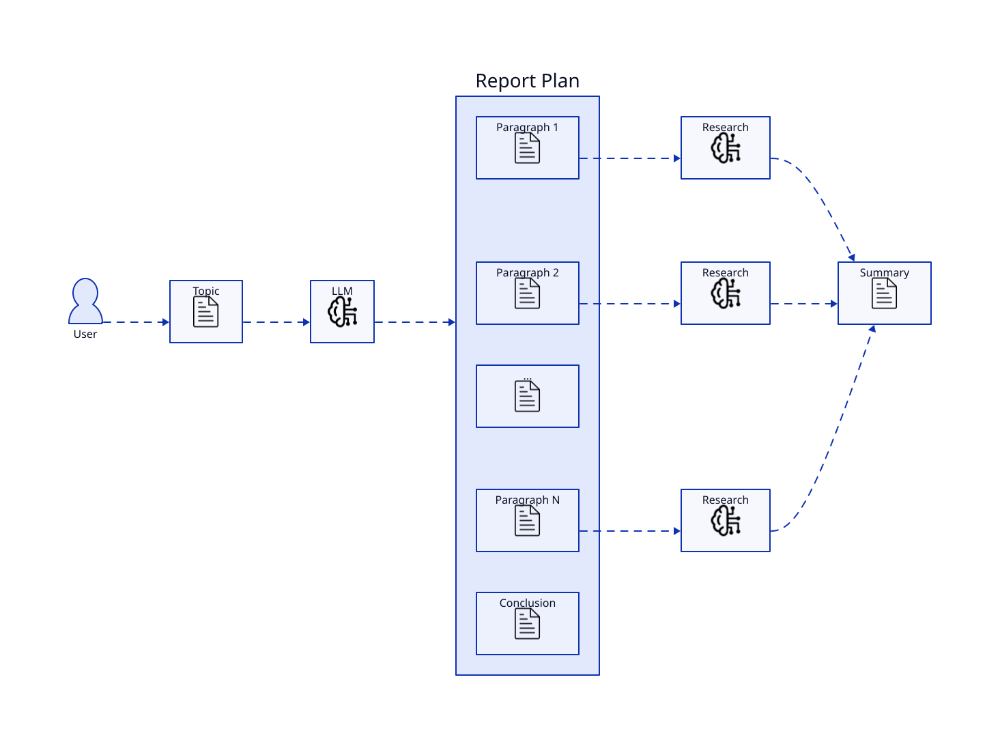
Agentic code review agent
Build an agentic assistant that reviews code changes (a diff / pull request) and produces structured findings (bug, style, missing tests) with severity and justification. The challenge is the agent loop and the parallelization: reviewing several files in parallel (asyncio / threads or parallel sub-agents), then a “judge” agent that deduplicates and filters low-confidence findings before publication.
Deliverables: a CLI or MCP server that fetches a PR, analyzes the diff per file, and emits findings; optionally a benchmark (precision/recall/F1) on a set of labeled PRs, and a short comparison with a human review.
Background: GitHub Copilot code review, Qodo / PR-Agent (open-source, Apache 2.0), CodeRabbit, GitHub PR files API, PyGithub.
Starter / concrete example: pick a real PR — e.g. a recent pull request from dask/dask or one in the module’s own repos. Fetch it with the GitHub REST API (GET /repos/{owner}/{repo}/pulls/{n}/files), split the diff per file, and review each file in parallel with asyncio.gather + a Semaphore(3). Have each reviewer return a typed JSON finding ({"severity": "high|medium|low", "category": "bug|style|test|perf", "justification": "..."}), then a judge agent that merges, deduplicates and drops findings below a confidence threshold. For the benchmark, label 10–20 PRs (known bugs, missing tests) and report precision/recall/F1 vs a human review.
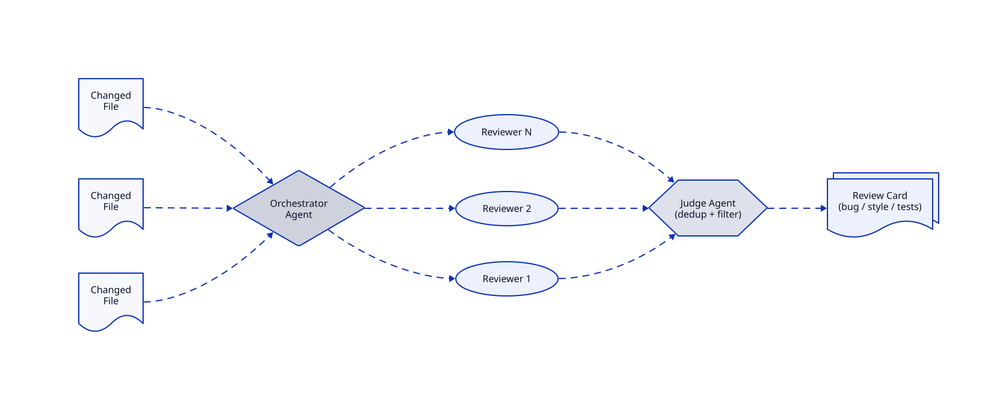
14.2.2 LLM agents & evaluation
RAG with an evaluation framework
Build a hybrid RAG pipeline (BM25 + dense embeddings, RRF fusion, reranker) on a corpus, and — the real challenge — an evaluation module that measures retrieval and answer quality (faithfulness, context relevance, precision, recall, MRR/NDCG). Compare several chunking × retrieval configurations and produce a comparative report.
Deliverables: the RAG pipeline, the evaluation harness (RAGAS/TruLens or an in-house metric suite), a comparative report, and a dashboard (Streamlit).
References: RAGAS, TruLens, hybrid retrieval, Qwen3-Embedding-0.6B, Qwen3-Reranker-0.6B, Reciprocal Rank Fusion, MS MARCO.
Starter / concrete example: index a concrete corpus — e.g. the module’s own Quarto book (Cours-programmation-MIASHS-2026) or a set of the course PDFs — as Markdown chunks. Build hybrid retrieval: BM25 (sparse) + dense embeddings (Qwen3-Embedding-0.6B), fuse with RRF, then rerank the top-20 with Qwen3-Reranker-0.6B. For evaluation, use RAGAS metrics (faithfulness, answer relevancy, context precision/recall) plus retrieval metrics (MRR@10, nDCG@10) on ~50 hand-written questions with gold passages. Run a grid over chunk sizes (256/512/1024) × top-k and output a comparative table.
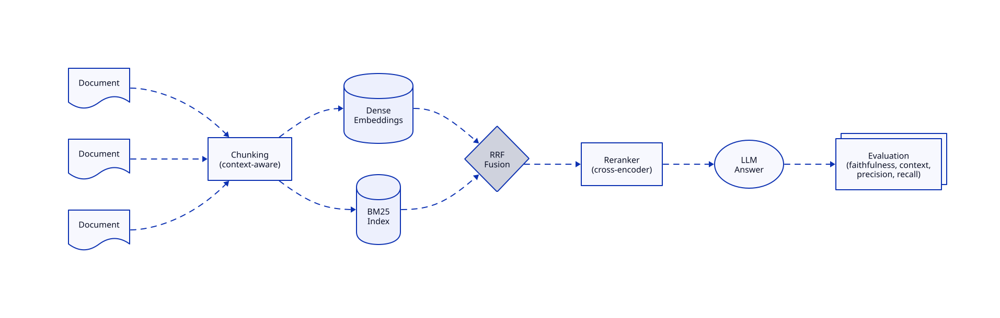
Socratic tutor agent
Build a socratic tutoring agent: a prompt system + question templates (by Bloom level) that guides a student through a programming exercise with questions instead of answers. Evaluate it against a simulated student (or a small corpus): number of steps before resolution, hints given, conceptual progression, and a LLM-as-judge pedagogical score. Compare 2–3 models/prompts and produce a session report with an automatic log.
Deliverables: the tutor agent, an evaluation harness, a session log, and a comparative report.
References: SocraticLM (NeurIPS 2024; SocraTeach dataset), MathTutorBench (EMNLP 2025; 7 tutor tasks incl. socratic questioning), MathTutorBench site, Qwen2.5-Math SocraticLM.
Starter / concrete example: drive the tutor on a real exercise — e.g. “write a recursive function to compute Fibonacci” or “fix this bug in a loop”. Use a prompt system + question templates by Bloom level (remember, understand, apply, analyse, evaluate) and log every turn (student answer, hint, escalation). For evaluation, reuse the MathTutorBench tasks (e.g. socratic_questioning.yaml) or the SocraTeach dialogues (github.com/Ljyustc/SocraticLM), and score with an LLM-as-judge rubric (hint timing, scaffolding, conceptual progression). Compare 2–3 models/prompts and report steps-to-resolution + hints given.
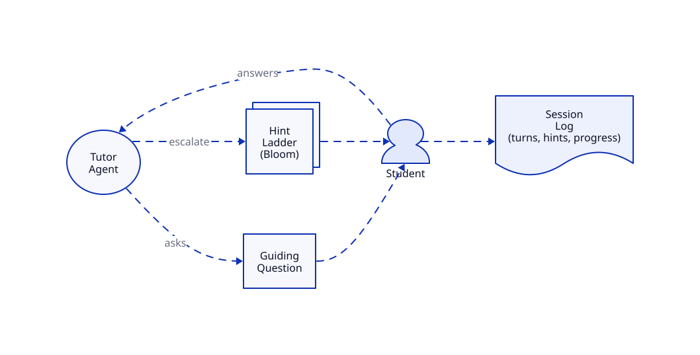
14.2.3 Local models & multimodal inference
Local decision-model pipeline (Jev / d3)
Build a fully local pipeline that uses a decision model (Jev / d3, or a cross-encoder reranker + zero-shot classifier) instead of an autoregressive LLM: the model outputs probabilities / typed decisions without decoding text, so responses are fast and cheap. Use it to rerank retrieval candidates and to zero-shot classify / route queries or documents, then measure latency and throughput against an LLM baseline.
Deliverables: the pipeline, a latency/throughput benchmark, a short quality comparison (nDCG@10, accuracy), and a write-up.
References: Jev / JEV-9B, jev-reranker (Jev as a reranker), d3 decision model, Decision 3.0 collection, Jev Decision Index, Qwen3-Reranker-0.6B, bge-reranker-v2-m3, zero-shot classification (bart-large-mnli), BTZSC benchmark.
Starter / concrete example: build a concrete router/reranker. Take a query, retrieve top-100 candidates via hybrid search, then use Jev (autotrust/JEV-9B) or d3 (vllm-sr/d3) to score each candidate: ask “is this candidate relevant to the query?” and get back a calibrated probability (no text decoding). Also zero-shot classify the query into a label set (e.g. factual | math | code | summary | other) using facebook/bart-large-mnli or d3. Measure latency (ms/decision) and throughput (decisions/s) vs the LLM baseline (Qwen3-Reranker-0.6B cross-encoder), and compare nDCG@10 / accuracy. See the jev-reranker blog for the pattern.
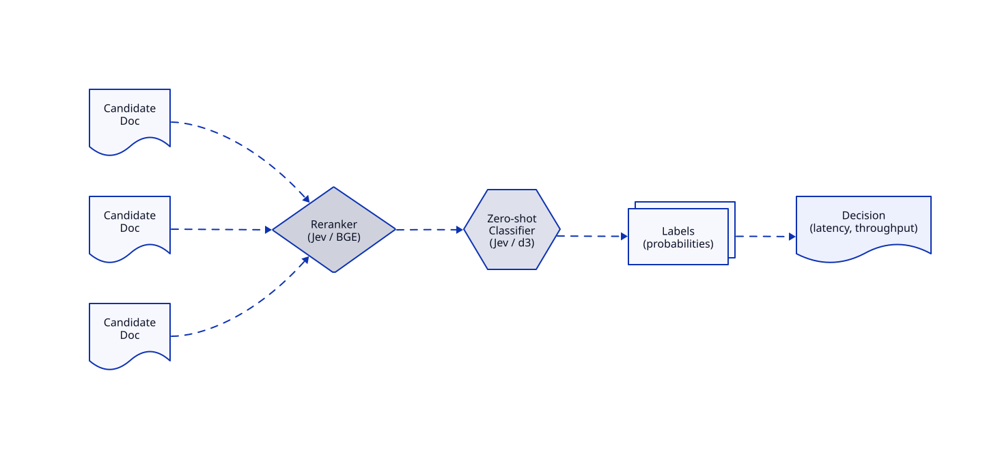
Multimodal embedding pipeline (EmbeddingGemma 2)
Build a local multimodal index with google/embeddinggemma-2: text, code, images, video and audio all project into one 768-dimensional space. Index a mixed corpus (PDFs + images + audio + code), search across modalities, and measure latency/memory across truncation (768→512/256/128) and quantization (BF16 vs GGUF). Optionally add a reranker as a second stage.
Deliverables: the encoder + index, a cross-modal retrieval demo, a latency/memory report, and a quality comparison (Recall@k/MRR by modality).
References: EmbeddingGemma 2, EmbeddingGemma 2 developer guide, EmbeddingGemma 2 GGUF (unsloth), EmbeddingGemma2 in transformers, Matryoshka truncation, Qdrant, sentence-transformers.
Starter / concrete example: index a mixed local corpus: PDFs of the course, figures (PNG/SVG), audio recordings, and .qmd/.py code. Use google/embeddinggemma-2 (740M full multimodal; you can also load only the 270M text encoder for a cheap baseline). All modalities project into one 768-dim space, so a text query can retrieve an image or an audio segment. Demonstrate cross-modal search: “find the figure about SIMD”, “find the audio segment about backpressure”. Then measure Recall@k / MRR per modality, and memory/latency across MRL truncation (768→512→256→128) and quantization (BF16 vs the unsloth/embeddinggemma-2-GGUF GGUF). See the developer guide for the modular-encoder trick.
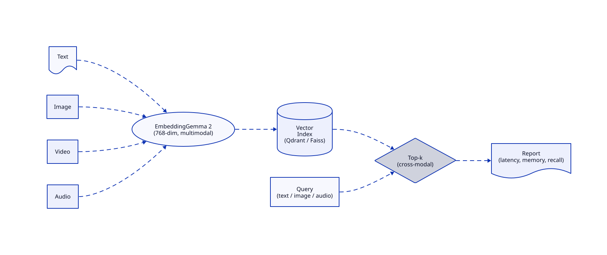
Multi-agent LLM orchestration (parallel endpoints)
Build an orchestrator that fans out a query to several parallel agents (each on one of the 7 Gemma-4-26B-A4B endpoints provided), then a judge agent that fuses, deduplicates and filters the results. Measure the speedup (1 vs 2 vs 4 vs 7 agents), latency, throughput, and the quality of the ensemble vs a single agent.
Deliverables: the orchestrator (asyncio/HTTP, retries, backpressure), the judge, a speedup/quality benchmark, and a write-up.
References: LangGraph, CrewAI, AutoGen, vLLM data-parallel, asyncio Semaphore, Tenacity retries.
Starter / concrete example: fan out a concrete query (e.g. “explain the trade-offs of optimistic locking, with a Python example”) to the 7 Gemma-4-26B-A4B endpoints, each with a distinct role prompt (correctness, performance, security, style, completeness, concurrency, simplicity). Run them in parallel with asyncio + a Semaphore (per-request timeout + exponential backoff), then a judge agent that fuses and deduplicates. Measure wall-clock speedup (1 vs 2 vs 4 vs 7 agents), latency, throughput, and ensemble quality (LLM-as-judge vs a single agent). See vLLM data-parallel and LangGraph/CrewAI/AutoGen for the orchestration patterns.
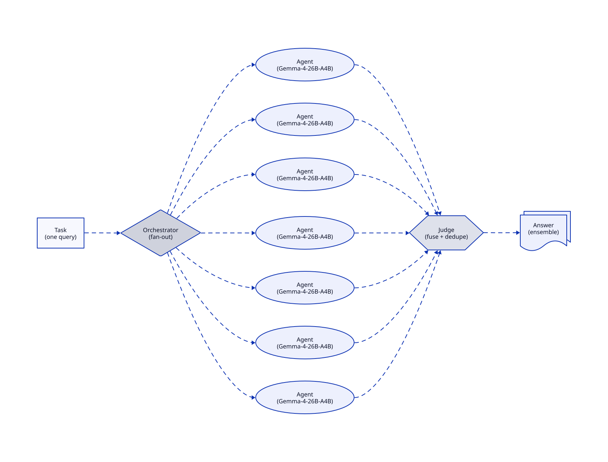
14.2.4 Parallel systems
Locking Strategy Lab: coarse vs fine vs optimistic vs RW locks
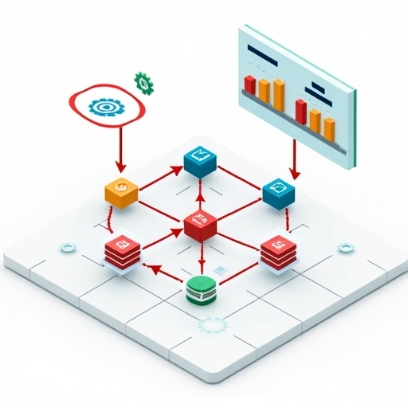
Implement and compare several locking strategies on a shared structure (e.g., a graph or a ledger):
- Coarse grain: one global lock protecting the whole structure;
- Fine grain: sharded locks or per-node locks;
- Reader–Writer lock: shared readers, exclusive writers;
- Optimistic reads (versioning / retry): read without lock, validate a version or CAS;
- optional: lock-free / CAS implementations in a lower-level language.
Deliverables: the implementations, a micro-benchmark harness, plots comparing throughput vs contention, and a write-up with recommendations.
References: locks and trade-offs, readers–writer locks, optimistic concurrency control, Python threading locks, Python atomics.
Multi-stage image pipeline with backpressure and flow control
Implement a 3+ stage image processing pipeline with bounded queues, backpressure propagation, and dynamic scaling heuristics — what happens when one stage is slower than the others, and how the pipeline degrades.
Deliverables: pipeline code, scaling heuristics, benchmark, a short UI or logging dashboard.
Typical pipelines: a generic supervised computer-vision pipeline (classification or recognition), or an OCR pipeline (detection + recognition).
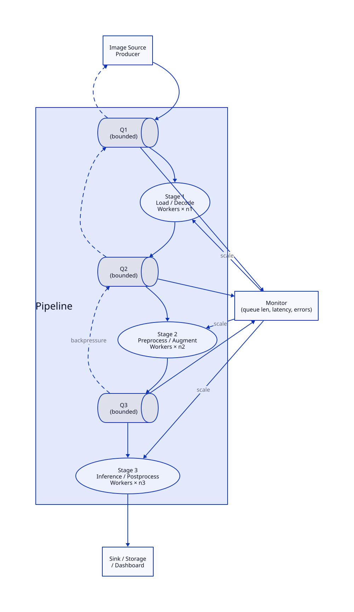
SIMD / vectorized kernel lab
Write and benchmark the same numerical kernel (sum, dot product, stencil, haversine, Mandelbrot) in several implementations: numpy vectorized, numexpr, numba @njit/@vectorize, Cython, and C + SIMD intrinsics. Compare explicit SIMD vs auto-vectorization, measure throughput/bandwidth, and produce an automated benchmark report with profiling.
Deliverables: the kernels, a reproducible benchmark harness (perf_counter / pytest-benchmark), plots, and a write-up with recommendations.
References: Numba vectorize, Numba SIMD examples, SIMD autovectorization in Numba, Numexpr, Cython, Speeding up Cython with SIMD, Intel intrinsics guide.
Starter / concrete example: implement the same kernels (dot product, 2D stencil, haversine, Mandelbrot) in: numpy (vectorized), numexpr, numba @njit + @vectorize, Cython, and C + AVX intrinsics. For each, measure throughput/bandwidth with perf_counter/pytest-benchmark and inspect the generated SIMD instructions (e.g. objdump -d, or Numba’s find_instr). Compare explicit SIMD vs auto-vectorization: write the C kernel with #pragma omp simd or -march=native, then a version with _mm256_add_ps intrinsics. Report speedups vs the numpy baseline and note when auto-vectorization fails (branches inside the loop).
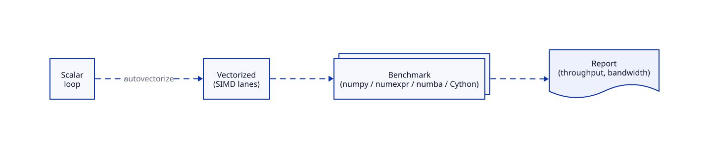
14.2.5 Distributed: Dask and Ray
Synthetic Dask DAG generator for evaluating task fusion and scheduling strategies
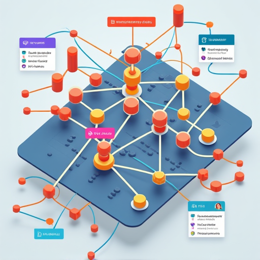
Create a synthetic DAG generator that varies task sizes, dependencies, and fusion parameters, and use it to evaluate how the Dask scheduler behaves.
Deliverables: the generator, a benchmark harness, plots, and scheduler tuning recommendations.
A small starter script is provided: synthetic_dask_dag.py (builds a random acyclic task graph with dask.delayed, visualizes it with graphviz, and optionally runs it under different schedulers — it is a starting point, not the project).
References: official Dask benchmarks, Dask graphs, Dask optimizations.
Ray distributed training of small LLMs
Use Ray (Ray Train + Ray Data LLM / vLLM) to fine-tune a small model (QLoRA: 4-bit base + LoRA adapters) on a task, then parallelize batch inference across several GPU workers and compare with the sequential baseline (speedup, GPU utilization, quality). Optionally compare quantizations (FP16 vs GGUF Q4 vs NF4).
Deliverables: the training/inference scripts, a speedup report, a short quality comparison, and the reproducibility setup.
References: Ray: working with LLMs, Ray Train, Unsloth, vLLM, QLoRA.
Starter / concrete example: fine-tune a small model (e.g. Qwen3-0.6B or SmolLM2-360M) with QLoRA (4-bit base + LoRA adapters) on a concrete task — e.g. a small code-instruction dataset or a math word-problem dataset. Use Ray Train + Ray Data for data loading and training, then parallelize batch inference with vLLM across 2–4 GPU workers. Measure wall-clock speedup vs the sequential baseline, GPU utilization (Ray dashboard), and quality (BLEU/accuracy on a small eval set). Optionally compare quantizations (FP16 vs GGUF Q4 vs NF4).
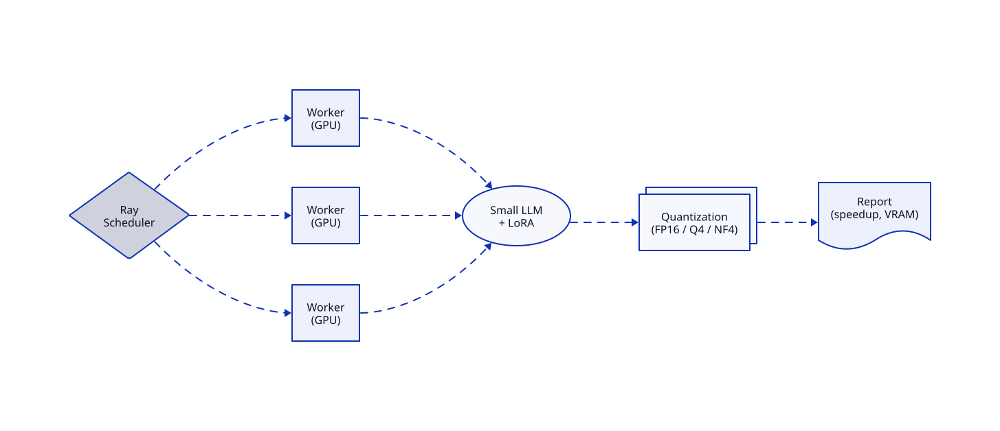
14.2.6 WebGPU
Proof of concept: WebGPU for OLAP queries in the browser
Demonstrate how WebGPU can accelerate in-browser OLAP operations (filters, group-bys, aggregates) on columnar data. What is OLAP? See Online Analytical Processing — fast, consistent, interactive access to data for analysis.
Deliverables: an in-browser demo and a short performance report.
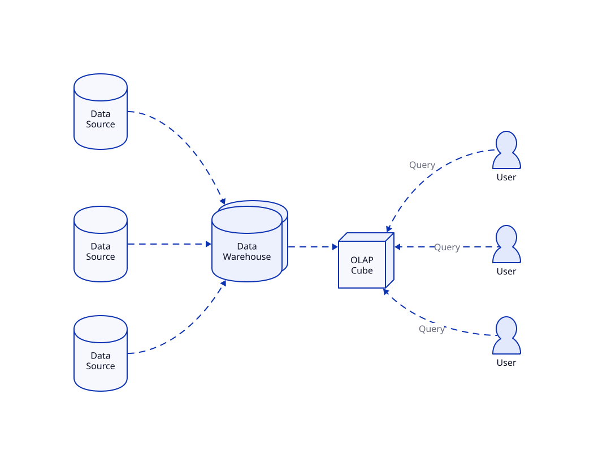
WebGPU path tracing
Starting point: the existing repo ferminLR/webgpu-path-tracing. Implement one or more of the TODO items it lists: advanced shader/task mapping, performance tuning, etc.
Deliverables: a pull request to the repo with one or more completed TODO items.
ETL + WebGPU visualization dashboard with Dask and Streamlit
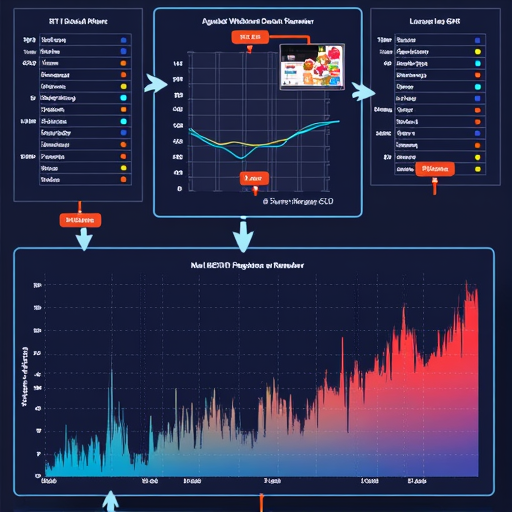
Run the ETL at scale locally with Dask, and visualize large aggregated results in the browser using WebGPU for rendering (or via a Streamlit embedding).
Deliverables: the Dask ETL pipeline, a WebGPU visualizer front-end, a fallback renderer, and a performance report.
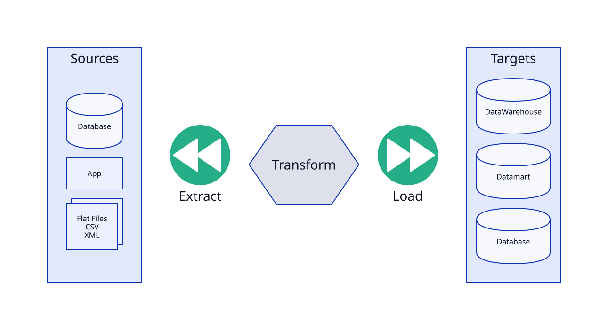
14.3 Minimal specification
- Clean Git repository: readable history, no large data in the repository.
- README: objective, installation (pinned dependencies), launch command, sample output.
- Runnable code: main script + minimal tests (at least one unit test on a key function).
- Measurements: at least one comparative table (sequential vs parallel, or worker variants) and the interpretation in 3–5 lines.
- Report (4–6 pages): objectives, architecture (diagram), technical choices, measurements, limits, what was learned.
14.4 Grading rubric (overall weight: 30%)
| Criterion | Detail | Internal weight |
|---|---|---|
| Technical mastery | Parallelism actually used and justified; no fake parallelism (GIL, blocked event loop, deadlock); resource management | 30% |
| Code quality | Readability, structure, error handling, basic tests, reproducible measurements | 25% |
| Compliance with the target | Answers to the objectives set in the learning plan; respect of the specification | 20% |
| Communication | Defense (5–8 min + questions), live demo, ability to explain choices and limits | 25% |
The 30% share of the final grade is given by the instructor on this rubric, identically for tracks A and B.
14.5 Defense (S11, 19/11, 13:30–15:30)
- 5–8 minute presentation + questions: what the project does, how it is parallelized, what gains were measured, what limits remain.
- The report is submitted before the session. Alternative arrangements (individual session, video submission) are planned if needed.
14.6 Frequently asked questions
- Can I use one more library? Yes, as long as the module’s technical subject (asyncio, IPC, Dask, vectorization, GPU/WebGPU depending on the topic) stays the justified core.
- What if my hardware has no GPU? GPU topics are optional; an asyncio/Dask/numpy vectorization project is more than enough. The kick-off survey is precisely used to calibrate these choices.
- Does the pair count? The level of expectation is adjusted (a more ambitious collective deliverable, or two clearly separated contributions); the roles are spelled out in the report.